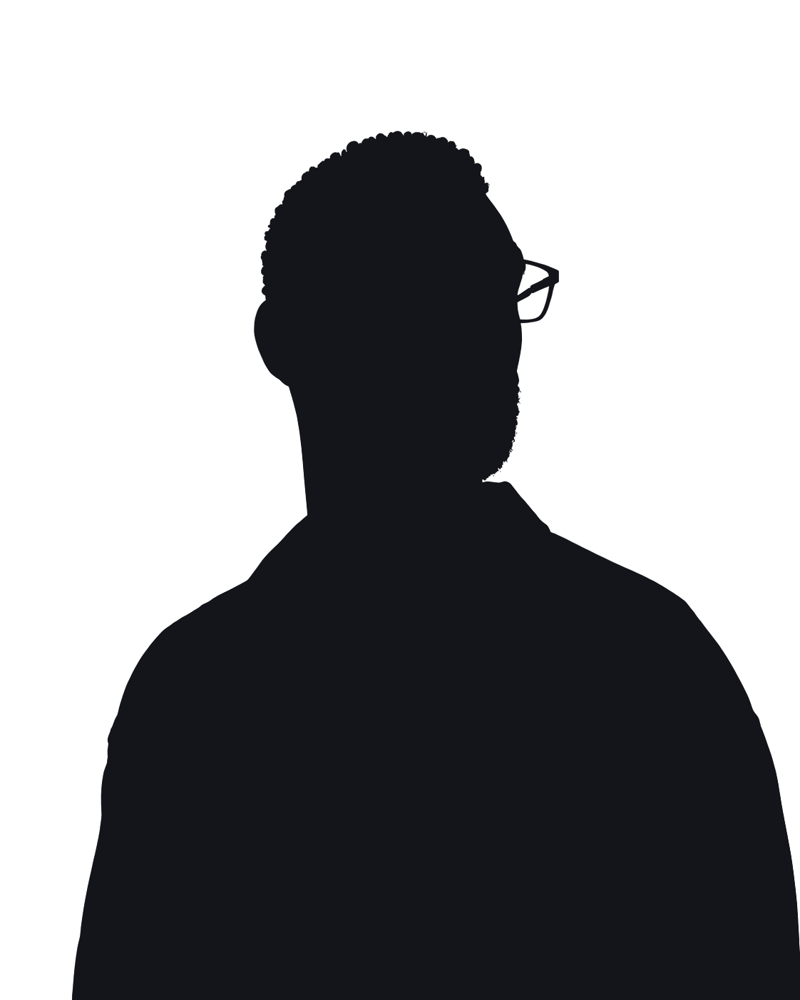

Ideias com direção.
Marcas, design, vídeo e campanhas com linguagem própria.

Deslize para explorar
Toque para abrir um projeto
Apresentações visuais temporárias de projetos próprios. Fotografias e materiais originais serão incorporados quando disponíveis e autorizados.
Percorra as especialidades e toque para saber mais.
Sou Herslander Jorge. Trabalho na conexão entre criatividade, comunicação e tecnologia, transformando ideias em experiências, marcas e soluções digitais.
Meu olhar reúne estratégia, design, audiovisual, desenvolvimento e inteligência artificial — da primeira conversa à entrega de uma solução que faça sentido para cada negócio.
Vamos criar algo juntosMarcas, design, vídeo e campanhas com linguagem própria.
Sites, aplicativos e sistemas conectados às necessidades reais.
Automações e agentes com contexto, controle e propósito.
Boas ideias vêm
de cima,
e sim, a gente dá
uma mão.